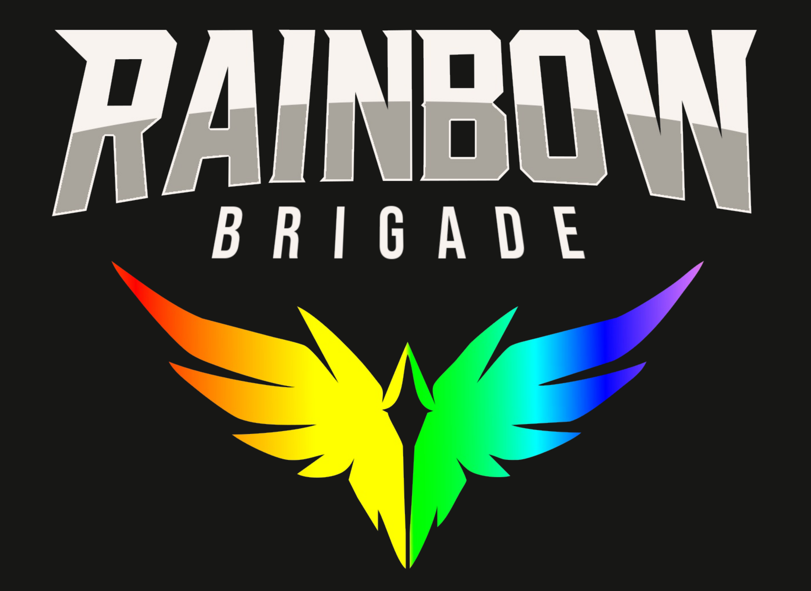

Infographic
This inforgraphic discusses the benefits and potential pain points for working adults interested in the Learner Experience Design graduate certificate at Metro State University. It taught me rounded text boxes, grouped items, and precisely matched lines. This was among the first projects I created in the software.
Board Game Manual
This document is the game manual for the boardgame "Risk and Re-Entry." It was created using art assets from other students in Intro to Game Design, but was designed entirely by me. It taught me how to extend text into multiple boxes, how to align boxes with each other, and how to create a border.

Game Pitch Packet
This document is a theoretical game pitch packet for a game called Rainbow Brigade. It taught me about complex layering of semi-transparent layers, precise positioning of elements in relation to others, and a fully-fleshed style guide for ease of recreation. This is the most complex document I have designed in Scribus to date.
